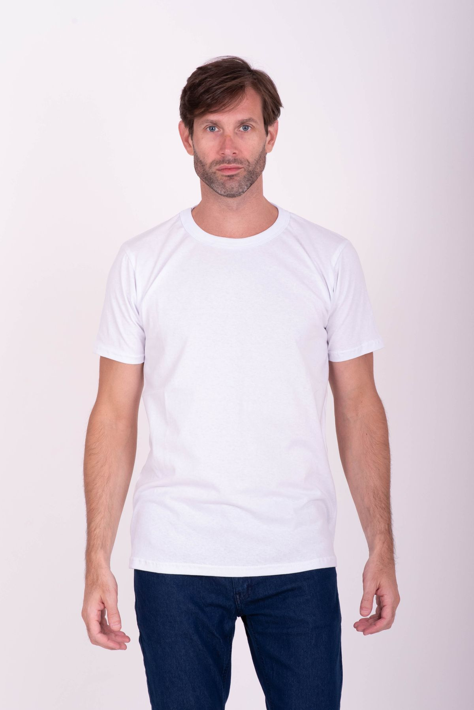

Paper
CSS token
Page background
Identity / 01 / THE EVERYMAN
A working board for the choices behind ABOVE THE MEAN. The storefront and guide share the same logo, CSS tokens, type, and interaction styles.
Both audience cards are hypotheses, not customer research.
Everyday streetwear
An everyday wearer seeking an approachable, shared sense of style.
Basic-info-first comparison
A visitor comparing plain tees wants to confirm available sizes and the demo/no-order details before deciding.
Learner expects this contrasting need may broaden the page's appeal; demand is not validated.
The Everyman
A familiar, accessible character for the brand.
Postmodernist / selected
Layering and mixed visual language; the learner's reason is not yet evidenced.

An everyday wearer shows one way to style a plain white tee. This stock photo is not the demo product, a fit reference, or an endorsement.
Photo by Estefania Milazzo / PexelsLearner prediction: the wearer may feel they are wearing “an advanced style of normal clothes.” This is a hypothesis, not a measured audience response.
Original SVG wordmark, used in the storefront header and shown here at working and one-color sizes.
Header-scale preview · 150px wide
Monochrome preview · one color
The monochrome SVG uses the same mark and wordmark without the blue
tile. The actual header uses the blue version. Check legibility and
contrast at both sizes; no trademark clearance is claimed. The
shared source is
assets/wordmark.svg.
Blue and neutral roles. Swatches and values come from the same shared tokens used by the storefront.
CSS token
Page background
CSS token
Text and the wordmark
CSS token
Primary action and emphasis
CSS token
Image and example surfaces
CSS token
Supporting text
Give each color a role. Check contrast for the actual text, backgrounds, focus indicators, and button states you use.
Display, body, and serif accent families are the same tokens used across the storefront and previews.
EVERYWO/MAN'S ATM
Everyday streetwear with a step-up point of view, without the hard sell.
Everyday, with a point of view.
Shared spacing tokens create a repeatable rhythm. Adapt the scale to your direction.
CSS token
CSS token
CSS token
CSS token
CSS token
CSS token
Use smaller gaps for related information and larger gaps between sections. Check the rhythm at phone and desktop widths.
Three words now guide the brand's everyday voice.
Outgoing · striking · meaningful
Keep the language lively and memorable while making each line matter to the everyday wearer.
Use familiar language and honest product information. The demo does not make claims about fit, materials, or customer response.
Two learner-selected examples are included; their effects have not been tested.
“Three ways to wear the white tee with clothes you already own.”
Free, optional styling ideas offer practical inspiration without requiring a signup or purchase. They describe styling suggestions, not product properties.
“Everyday style has room for every point of view.”
The line invites visitors who value everyday style to identify with the brand. It does not claim an existing customer group or community.
These examples use the described mechanisms, not measured conversion results. No response or community is claimed.